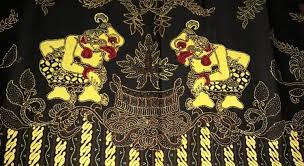

Batik Banyumas awalnya berpusat di daerah Sokaraja, batik ini dibawa oleh pengikut - pengikut Pangeran Diponegoro yang setelah usai peperangan tahun 1830, mereka kebanyakan menetap di daerah Banyumas. Pengikutnya yang terkenal waktu itu ialah Najendra dan dialah yang mengembangkan batik di Sokaraja. Bahan mori yang dipakai merupakan hasil tenunan sendiri dan pewarna yang digunakan adalah pewarna alam berupa pohon tom, pohon pace atau pohon mengkudu, yang menghasilkan warna semu kuning.
Berikut adalah beberapa informasi tentang Batik Banyumas:
1. Motif yang Beragam: Batik Banyumas memiliki beragam motif yang terinspirasi dari kebudayaan lokal, mitologi, alam sekitar, serta kehidupan sehari-hari. Motifnya bisa berupa bunga, fauna, geometris, atau motif-motif yang memiliki makna filosofis.
2. Keseimbangan Simetri dan Asimetri : Motif-motif dalam Batik Banyumas cenderung menciptakan keseimbangan antara simetri dan asimetri, memberikan dinamika visual pada kain batiknya.
3. Kegunaan dalam Kehidupan Sehari-hari: Selain sebagai pakaian tradisional, Batik Banyumas juga diaplikasikan dalam berbagai bentuk seperti sarung, selendang, hingga perlengkapan rumah tangga.
Batik Banyumas adalah bagian dari warisan seni dan budaya Indonesia yang kaya. Dengan motif-motif yang bervariasi, penggunaan warna yang cerah, serta nilai-nilai budaya yang terkandung di dalamnya, Batik Banyumas menjadi bagian penting dari keanekaragaman budaya Indonesia.